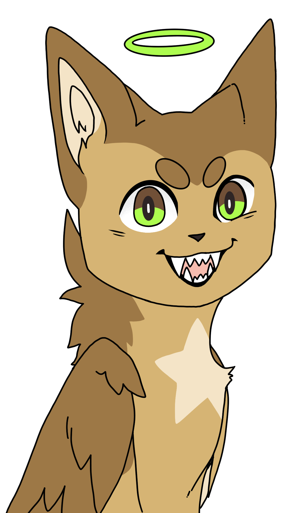

About DirpDesigns
Hello, my name is Dirppaw the one behind DirpDesigns!
I have been building up DirpDesigns since my Sophmore year of highschool.
At first it was just going to be a digital commissions based buseness, but as time went on I realized I wanted more. So on top of making digital commissions for people I will also print and preduce commissions as well! I mainly am going to speshalize in non-paper printing I.E. T-shirts, mugs, hats, ect.
Since this buseniss is just starting, I don't have the funds to do all the printings I want to, so for now this business will focus on digital printings.
However, I will help sit up a way to print commissions out. Either by partnering with another printing company or by just finding a place that has good deals and good quality.
Current setup
Has I said up top, currently DirpDesigns focues on digatil commissions. This means that you can commission me to draw something for you. Either a logo, character, or (almost) anything your heart desires.
As stated in my commissions page, I will take half of the payment up front and the rest after I complete the commission. This is mainly to make sure I at least get something for my time. Either because of scaming attempts or because someone decides they no longer want me servuses.
Future goals
DirpDesigns will always have a digital commissions option. However, I'm planning to expand into the printing world as well. Not only that, but I'd also like to someday hire people that could make basic websites for people. As well as other artests that customers can commission from.
